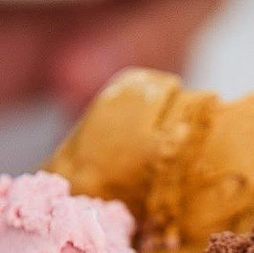

El sabor artesanal de Charlone
Helados elaborados con pasión, desde el corazón del pueblo. Una experiencia cremosa que honra la tradición.
keyboard_arrow_down
La Selección del Maestro
Sabores Destacados
Dulce de Leche
La cremosidad del campo argentino en cada cucharada.

Chocolate Artesanal
Cacao selecto fundido para paladares exigentes.

Frutilla con Crema
Frutillas frescas y crema natural de primera calidad.
Momentos Charlone
Galería de Texturas



Nuestra Historia
Tradición en Coronel Charlone
En el corazón de nuestro pueblo, Helados Charlone nació como un sueño familiar de recuperar el verdadero sabor artesanal. Cada balde se produce localmente usando leche fresca y frutos seleccionados, manteniendo viva la esencia de la heladería de antaño con un toque de modernidad europea.
location_on